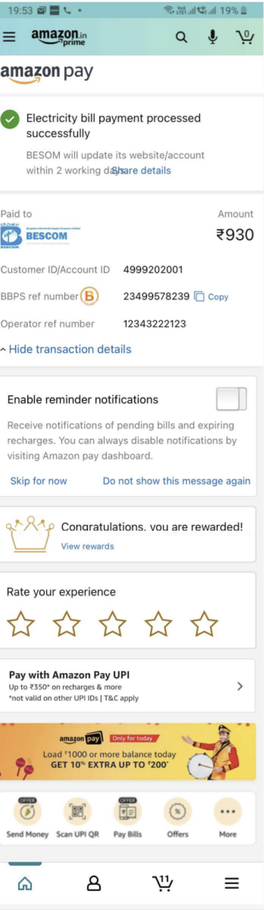
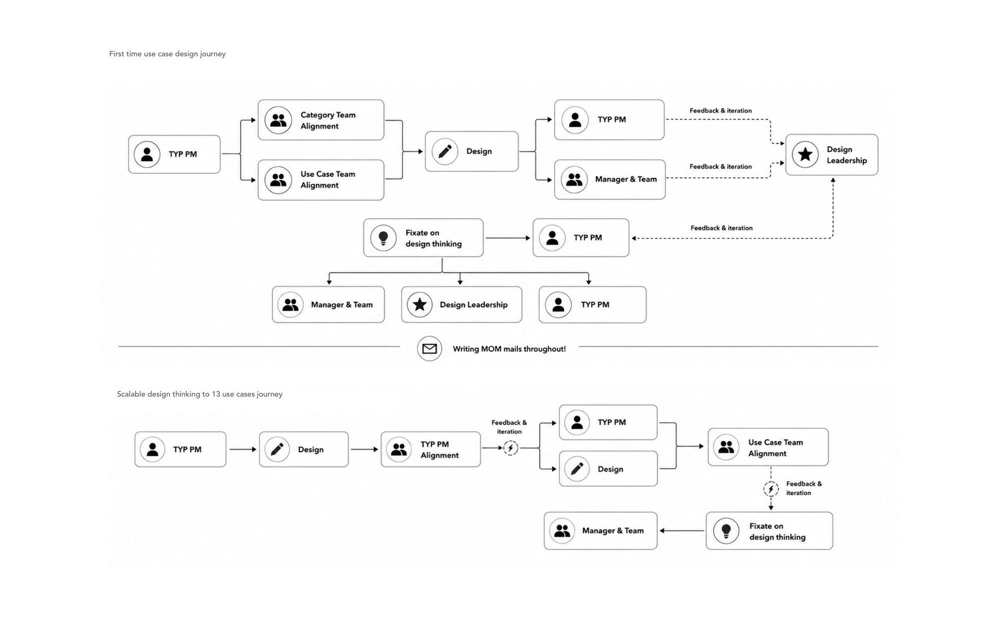
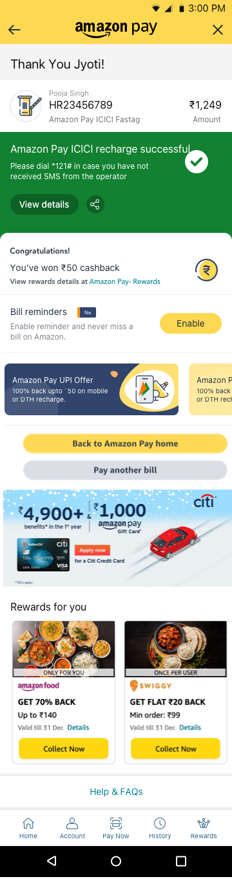
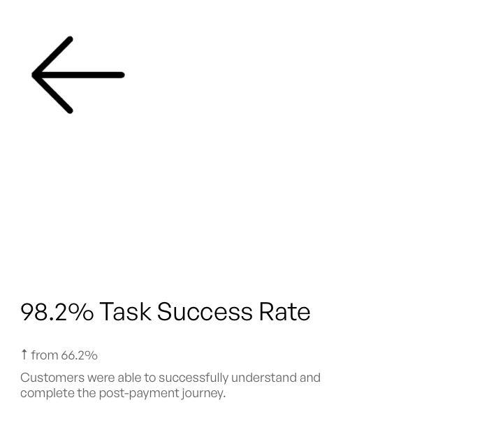
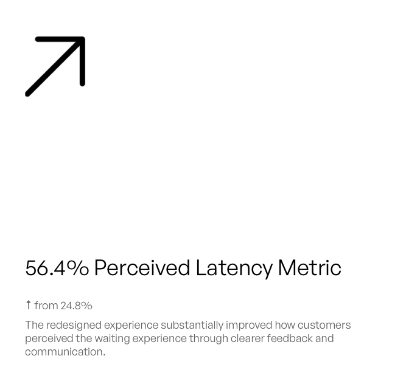
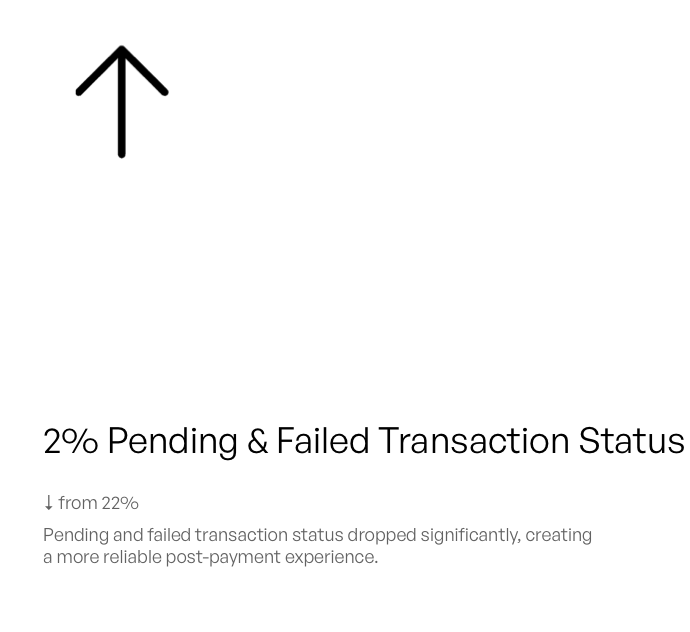

Thank You Page
User experience research and design improvements for Amazon Pay payment platform, focusing on user pain points and service optimization through comprehensive user scenario analysis.
User scenario
Rahul, thrilled with his first paycheck, eagerly took on the responsibility of paying household bills to ease his dad's burden. He opted to use Amazon Pay after seeing its seamless payment ads & chooses to be it's first customer. However, his experience with the service left him frustrated and anxious.
Frustrated rahul calls Amazon customer care
He got a severe headache and bills are still unpaid
Current system

- Customers often don't realize they've reached the final step of the transaction & landed on the Thank You page, as there's no clear visual break or distinction from the previous pages.
- The success card's visual treatment closely resembles the cards beneath it, diminishing the sense of achievement & excitement that should come with a successful transaction.
- The abundance of elements on the page can slow down customers as they try to read & comprehend every section.
- Positioning rewards card at the edge of the above-the-fold experience reduces its visibility and discoverability, causing customers to anxiously search for their rewards despite their importance in building trust and encouraging repeat engagement with Amazon Pay.
- Different categories use inconsistent Thank You page designs and language, making it difficult for customers to develop a familiar mental model of this key transaction moment.
- Current system has a lot of UX glitches and information gap which starts from the point as users tap Pay now & following are the steps/screens they have to go through before landing on the TYP.



“How do I get back on the application?”
Where are my rewards?
“Is this even going to be successful?”
“How can I share my transaction?”
“Has my cashback got transferred in my bank account?”
“Is this payment successful?”
“Why is there a blank screen? What did I click?”
“How do I see what amount I have paid?”
Problem solution mapping
Problem 01
Low Perceived Success Rate
Customers receive little or no communication after completing a payment, sometimes encountering a blank screen.Problem 02
Decrease in Trust
Longer response times and uncertainty around transaction status increase customer agitation, particularly for newer users.Problem 03
Inconsistent Thank You Pages
Different payment categories provide different post-payment experiences, making information difficult to predict or find.Problem 04
Information Gap
Customers struggle to confirm important payment details because information isn't structured or surfaced appropriately.Problem 05
Rewards Lack Visibility
Customers don't notice the rewards they receive through Amazon Pay, reducing the perceived value of using the product.Design opportunity 01
Build confidence through clear transaction feedback
Create an immediate and prominent confirmation experience that clearly communicates whether the payment was successful, pending, or failed.Design opportunity 02
Design for perceived speed & reassurance
Reduce uncertainty during processing with progressive feedback and clear system communication, so customers always understand what is happening with their money.Design opportunity 03
Create a scalable post-payment framework
Establish a consistent information hierarchy and reusable experience that can scale across Amazon Pay's different payment categories and transaction states.Design opportunity 04
Surface the right information at the right moment
Prioritize essential transaction details and next steps so customers can quickly verify their payment without searching elsewhere.Design opportunity 05
Make rewards part of the payment story
Integrate rewards into the post-payment journey so customers clearly understand what they earned and the value of continuing to use Amazon Pay.Process exploration

Design screens
Design direction
From customer anxiety to confidence
The new TYP experience is built around a simple principle: prioritize information based on what matters most to customers immediately after completing a payment.
Establish context immediately
Make transaction status unmistakable
Prioritize information by urgency
Turn rewards into a moment of delight
Give the journey a clear continuation
Keep commercial content secondary
Designs across 13 use cases



Pending and failed screen
Cross product impact - rewards experience (LIVE')
Problem solution mapping
Experience gap 01
Low Reward Visibility
Customers can easily overlook rewards after completing a transaction.Experience gap 02
Lack of Celebration
Receiving a reward feels informational rather than rewarding.Experience gap 03
Unclear Reward Value
Customers have to interpret what they received, especially for cashback and offers.Experience gap 04
Text-heavy Offers
Offers require customers to read and interpret information before understanding their benefit.Experience gap 05
Weak Reward Recognition
There isn't a strong visual cue customers can consistently associate with rewards.Experience gap 06
Multiple Rewards Become Complex
The existing experience becomes harder to consume as the number or type of rewards increases.Experience gap 07
Poor Reward Navigation
Exploring several rewards introduces additional effort.Design opportunity 01
Elevate reward visibility
Make rewards a prominent part of the post-payment experience so customers immediately recognize what they earned.Rewards wireframes


Desktop designs
Design screens
Impact


